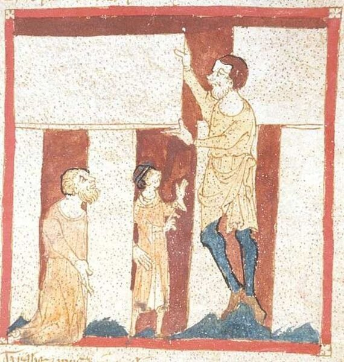

«Отец диакон спросил... Герасю... как мол он объясняет выражение: темна вода во облацех? на что Герася должен был, по указанию самого отца диакона, ответствовать: "сие есть необъяснимо".
Тургенев. Новь.
В рассказе о римском футе мы подробно, насколько это уместно в журнальных заметках, осветили работы по определению его величины по отношению к современным единицам. Казалось бы, этого достаточно и для определения величины греческого фута (πούς). Ведь практически в один голос все древние авторы утверждают, что греческий фут по отношению к римскому находился в соотношении 25:24. А это значит, что среднестатистическое его значение равняется 308,54 мм. По измерениям, полученным другим путем, величина греческого фута определена как 308,28 мм. Но этих слов мало для такого явления, как греческий фут. Приведу отрывок из признанного авторитета современной архитектурной метрологии Кирилла Николаевича Афанасьева:
«Мы, анализируя пропорции сооружений исторического прошлого, как бы наблюдаем за действиями зодчего. Он не прибегает к измерению частей здания, а он строит их на основе простых законов соразмерности; он в принципе прибегает к мерам длины лишь однажды, определяя исходный размер для последующей цепочки соразмерностей. Во всем этом мы имели возможность убедиться. Этот размер определялся "по образцу", примеру ранее сооруженных зданий и выражался округлым значением мер длины. Мы встретились со 100-футовым размером Парфенона; через шесть веков (!) тот же 100-футовый размер применен строителями Пантеона Рима; еще через два века в том же Риме сооружается базилика Максенция и ее размер определяется теми же ста футами; еще через два века купол Софии Константинопольской оказывается равным тем же 100 г. ф. (греческих футов – g_g); София в Салониках имеет размер, равный 100 г. ф.; София Киевская и София Новгородская, так же как София в Салониках, имеют 100-футовые размеры. Те же 100 футов встречаются еще и еще во многих случаях. Б. М. Полевой в труде "Искусство Греции "(30) вслед за нами приводит много примеров использования в греческой архитектуре все того же "сакраментального", как он называет, размера в 100 греческих футов.
Мы накопили много примеров использования этого размера. Факт распространения этой меры - ста греческих футов - во времени от Парфенона V в. до н. э. до Киевской Руси XI-XII веков н. э. и на территории от Рима до Новгорода свидетельствует о своеобразной градостроительной дисциплине, единой шкале масштабности и устойчивости меры длины.»
(Афанасьев К.Н. Опыт пропорционального анализа. Есть в сети.)
Мы в предыдущих заметках уже рассказывали о представителе этого стандарта – храме Гекатомпедон. По обмеру предполагаемого его стилобата в натуре получен размер 30 м 89 см, т.е. несколько больше расчетного, если брать приведенные выше значения греческого фута. О том, чем можно объяснить это незначительное расхождение (менее 0,2%), подробно говорит в своих работах Афанасьев. Мы же отметим, что быть может измерение проводилось без учета кривизны по слегка выпуклой кромке стилобата. Афанасьев же решает вопрос кардинально: быть может, следует греческий фут измерять Парфеноном, а не наоборот.
Сто футов (ἑκατόμπεδον – гекатомпедон) как некий типовой размер встречались в греческой архитектуре и раньше. Так, храм Зевса Олимпийского имеет по длине около 200 греческих футов, а ширина окружающего его свободного пространства с севера и запада равна 100 футам. Погребальный костер Патрокла также имел в плане те же 100 греческих футов.
Выслушав речи его, повелитель мужей Агамемнон
Весь немедля народ отпустил к кораблям мореходным.
С ними остались одни погребатели: лес наваливши,
Быстро сложили костер, в ширину и длину стоступенный;
(Гомер, Илиада, XXIII, 164. [Перевод Н. И. Гнедича])
В подлиннике значимая строка выглядит так:
ποίησαν δὲ πυρὴν ἑκατόμπεδον ἔνθα καὶ ἔνθα
Не можем мы обойти и отношение гекатомпедона к размерам Земли. Исследователь В. Терешин установил, что круглый меловой вал и сарсеновое кольцо (поставленные по кругу гигантские камни (мегалиты) твердой песчаниковой породы) Стоунхенджа имеют такое же отношение диаметров, как диаметры Земли и Луны. К этому мы можем добавить, что диаметр сарсенового кольца Стоунхенджа равен все тем же 100 греческим футам (правда, приблизительно, эта цифра считается равной 33 м, но диаметр круга из таких камней может быть замерен, конечно же, только приблизительно). "Сие есть необъяснимо", если вспомнить отрывок из Тургенева, приведенный в эпиграфе. Если только не поверить в легенду.
Знаменитый нормандский поэт XII века Роберт Вас (Wace) в своем «Романе о Бруте» полагает, что Стоунхендж был сооружен при содействии мудреца и волшебника из кельтских мифов, наставник короля Артура, Мерлина. Не даром первое известное изображение Стоунхенджа находится как раз в манускрипте Васа (хранится в Британской библиотеке), содержащем роман о Бруте, и показывает оно, как Мерлин помогает в его строительстве.

Мы уже не раз связывали величину фута у разных народов с размерами ноги их героев. Не остались в стороне и греки. По преданию, Геракл измерил Олимпийский. стадий своими стопами, причем оказалось в нем 600 геракловых стоп. Фидон, будучи лицом, ответственным за организацию Олимпийских игр – агонофетом – в честь Геракла установил навсегда размеры фута, так что Олимпийский стадий сделался нормой для всякого линейного измерения.
Вот на этой богатырской ноте и расстанемся с античным миром. А впереди у нас – средневековая Европа.